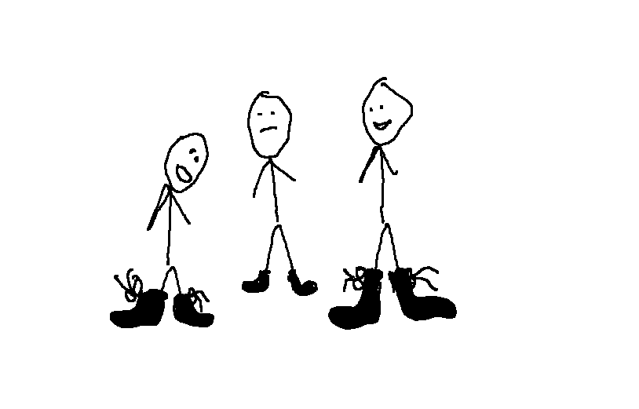

Nem volt cipője Szinusznak tesi órán
Cipő nélkül ment le Szinusz a B tornaterembe, csak a tornaterem előtt jött rá, hogy az órán nem tesizni, hanem pakolni fognak. Csak fél óra hideg padlón való állás után mehetett fel, és állhatott meleg padlón, de még akkor sem volt rajta cipő. Mint később kiderült, Szinusz szándékosan gyötörte magát, mert amikor Inverz Ackermann cipőt adott volna neki, akkor azt is visszautasította.